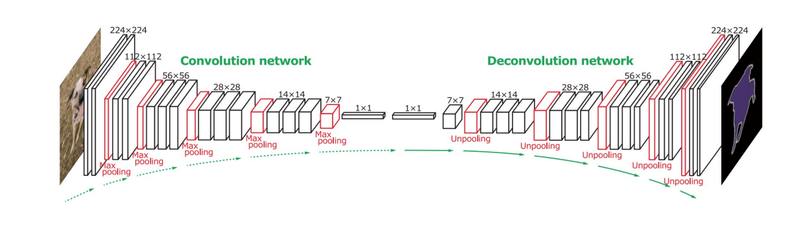

Segmentation
We have previously learned about Object Detection, which allows us to locate objects in the image by predicting their bounding boxes. However, for some tasks we do not only need bounding boxes, but also more precise object localization. This task is called segmentation.
Pre-lecture quiz
Segmentation can be viewed as pixel classification, whereas for each pixel of image we must predict its class (background being one of the classes). There are two main segmentation algorithms:
- Semantic segmentation only tells the pixel class, and does not make a distinction between different objects of the same class
- Instance segmentation divides classes into different instances.
For instance segmentation, these sheep are different objects, but for semantic segmentation all sheep are represented by one class.

Image from this blog post
There are different neural architectures for segmentation, but they all have the same structure. In a way, it is similar to the autoencoder you learned about previously, but instead of deconstructing the original image, our goal is to deconstruct a mask. Thus, a segmentation network has the following parts:
- Encoder extracts features from input image
- Decoder transforms those features into the mask image, with the same size and number of channels corresponding to the number of classes.

Image from this publication
We should especially mention the loss function that is used for segmentation. When using classical autoencoders, we need to measure the similarity between two images, and we can use mean square error (MSE) to do that. In segmentation, each pixel in the target mask image represents the class number (one-hot-encoded along the third dimension), so we need to use loss functions specific for classification - cross-entropy loss, averaged over all pixels. If the mask is binary - binary cross-entropy loss (BCE) is used.
✅ One-hot encoding is a way to encode a class label into a vector of length equal to the number of classes. Take a look at this article on this technique.
Segmentation for Medical Imaging
In this lesson, we will see the segmentation in action by training the network to recognize human nevi (also known as moles) on medical images. We will be using PH2 Database of dermoscopy images as the image source. This dataset contains 200 images of three classes: typical nevus, atypical nevus, and melanoma. All images also contain a corresponding mask that outlines the nevus.
✅ This technique is particularly appropriate for this type of medical imaging, but what other real-world applications could you envision?

Image from the PH2 Database
We will train a model to segment any nevus from its background.
✍️ Exercises: Semantic Segmentation
Open the notebooks below to learn more about different semantic segmentation architectures, practice working with them, and see them in action.
Post-lecture quiz
Conclusion
Segmentation is a very powerful technique for image classification, moving beyond bounding boxes to pixel-level classification. It is a technique used in medical imaging, among other applications.
🚀 Challenge
Body segmentation is just one of the common tasks that we can do with images of people. Another important tasks include skeleton detection and pose detection. Try out OpenPose library to see how pose detection can be used.
Review & Self Study
This wikipedia article offers a good overview of the various applications of this technique. Learn more on your own about the subdomains of Instance segmentation and Panoptic segmentation in this field of inquiry.
Assignment
In this lab, try human body segmentation using Segmentation Full Body MADS Dataset from Kaggle.